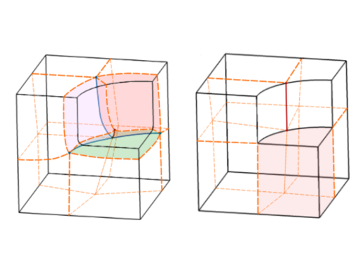

Maxence Reberol's homepage
 Email: maxence (dot) reberol (at) gmail (dot) com
Email: maxence (dot) reberol (at) gmail (dot) com
Presentation
I was a postdoctoral researcher at UCLouvain
working with Jean-François Remacle
in the Hextreme team. My research interests
revolved around robust meshing of CAD models, including all-quadrilateral
surface meshing, robust hex-dominant volume meshing and the exploration of
combinatorial techniques for unstructured all-hexahedral meshing.
Before that, I did a Computer Science PhD in the Alice team (Inria Grand-Est)
focusing on different aspects of hex-dominant meshes: generation with
frame-field based global parametrization, numerical simulation with the
finite element method and evaluation of mesh impact on numerical results. My PhD supervisors were Bruno Lévy
and Sylvain Lefebvre.
Publications
- Generation of High-Order Coarse Quad Meshes on CAD Models via Integer Linear Programming
- Mattéo Couplet, Maxence Reberol, Jean-François Remacle
- AIAA Aviation, 2021
-
PDF
- All-hexahedral boundary layer meshing
- Maxence Reberol, Kilian Verhetsel, François Henrotte, David Bommes, Jean-François Remacle
- Preprint, 2021
-
PDF,
Results (supplemental)
Available in the hexbl development branch of Gmsh
- Quad layouts with high valence singularities for flexible quad meshing
- Jovana Jezdimirovíc, Alexandre Chemin, Maxence Reberol, François Henrotte, Jean François Remacle
- Preprint, 2021
- PDF
- Robust Quantization for Polycube Maps
- Protais François, Maxence Reberol, Nicolas Ray, Etienne Corman, Franck Ledoux, Dmitry Sokolov
- Preprint, 2020
- PDF

- Multiple approaches to frame field correction for CAD models
- Maxence Reberol, Alexandre Chemin, Jean-François Remacle
- 28th International Meshing Roundtable, 2019
-
PDF,
Slides,
CAD models
- Maillages hex-dominants : génération, simulation et évaluation
- Maxence Reberol
- PhD thesis, 2018
- Supervisors: Bruno Lévy, Sylvain Lefebvre
-
Link,
PDF,
Slides
- Hexahedral Meshing: Mind the Gap!
- Nicolas Ray, Dmitry Sokolov, Maxence Reberol, Franck Ledoux, Bruno Lévy
- Computer-Aided Design, 2018
-
Link,
Preprint
- Computing the distance between two finite element solutions defined on different 3D meshes on a GPU
- Maxence Reberol, Bruno Lévy
- SIAM Journal on Scientific Computing, 2018
-
Link,
PDF,
Code (on Github)
- Low-order continuous finite element spaces on hybrid non-conforming hexahedral-tetrahedral meshes
- Maxence Reberol, Bruno Lévy
- Research report, 2016
-
Preprint
Talks
- Hex-dominant meshing with all-hexahedral boundary layer,
USNCCM16,
Online, 2021.
- Quasi-structured quadrilateral meshing of complex CAD models in Gmsh,
FRAMES 2020,
Online, 2020.
(video)
- 3D frame fields and block decomposition of CAD models,
seminar at the
Computer Graphics Group, Unibe,
Bern (Switzerland), 2020.
(slides)
- Multiple approaches to frame field correction for CAD models,
28th IMR,
Buffalo (US), 2019.
(slides)
- Towards automatic block decomposition of 3D domains by exploiting frame fields,
IGA 2019,
Munich (Germany), 2019.
(slides)
- Towards automatic block decomposition of general 3D domains by correcting frame fields,
USNCCM15,
Austin (US), 2019.
(slides)
- Limitations of boundary-aligned frame fields for full hexahedral meshing,
FRAMES 2019,
Louvain-la-Neuve (Belgium), 2019.
(slides)
-
Maillages hex-dominants : génération, simulation et évaluation,
PhD defense, Nancy (France), 2018.
(slides)
- Efficient computation of distances between FEM solutions defined on different 3D meshes,
CHANGE workshop,
Leysin (Switzerland), 2018.
(slides)
- Hex-dominant meshes and the finite element method,
seminar at UCLouvain,
Louvain-la-Neuve (Belgium), 2017.
- Finite Element method on hybrid hexahedral-tetrahedral meshes,
seminar at ENSG
Nancy (France), 2016.
Teaching
- 2018-2021: Tutorials on math analysis (LEPL1102), UCLouvain
- 2017: Course on the implementation of FEM in C++ and student project supervision, ENSG
- 2017: Tutorials on numerical analysis, ENSG
- 2016, 2017: Tutorials on programming and algorithms, ENSG
Education
- PhD in Computer Science, Inria Grand-Est / Université de Lorraine, 2015 - 2018
- M.Sc. in Civil engineering, École Centrale Paris, 2013 - 2014
- Diplôme d'Ingénieur, Supélec, 2011 - 2014